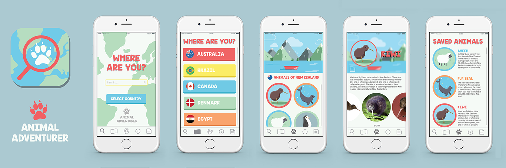

As part of my ‘Imaging and Data visualisation’ module in university I was required to come up with a travel app idea and conceptualise it. The app had to have at least 3 different screens and a set of icons.
To kick start some idea generation I brainstormed a large range of words associated with travelling; things like food, transport, entertainment & sightseeing. One word I thought about a lot was entertainment while travelling which made me think about kids and parents who may want to keep their children entertained whilst on holidays and travelling through different countries. I then came up with the concept of an app that shows the user animals tare indigenous to the country the user is in, the app would be specifically targeted at children.
With this idea I then began to sketch out app screen ideas, this was a long process of scrapping and refining screens until I had 5 strong screens that I could start to design in Illustrator. For my 5 screens I decided I would decide 5 corresponding icons to fulfil the icon set requirement.
When I began to design my screens on illustrator I first started with the illustrations I would have to do, I had to illustrate a landscape, then I was going to illustrate 4 example animals to show and finally I would have to design the icons for each screen. Once this was done I could get stuck into the actual screen formats and insert the illustrations where needed. Once the screens were designed I created a menu bar that would appear on the bottom of each screen and hold my 5 icons.
Finally I decided to give the app a brand to showcase its full potential. I created a logo for the app store icon and a word mark.
I was very pleased with how the final screens looked, my colour scheme was strong and worked well with the branding. No screen looks out of place in terms of format . Looking forward I would like to start to actually develop this app and see it brough to life
